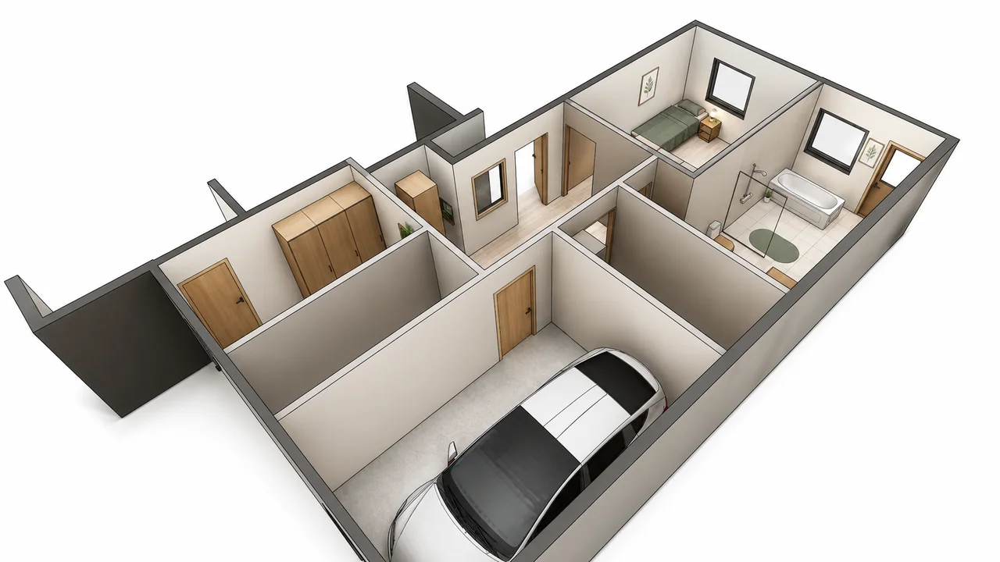

Ombyggnad i Höllviken
Höllviken · Ombyggnad

Visualisering · Bildmaterial från Studio Paredes
- Plats
- Höllviken
- Uppdrag
- Ombyggnad
- Skede
- Pågående skisskede
En omorganisation av befintliga ytor för bättre flöden, förvaring och familjeliv.
Alternativa planlösningar prövar badrum, tonårsrum, tvättstuga, skafferi, garage och groventré. Arbetet fokuserar på att ge vardagens rum bättre samband och använda dagsljuset mer genomtänkt.
Mer om projektet och bildmaterialet: Studio Paredes originalpresentation.